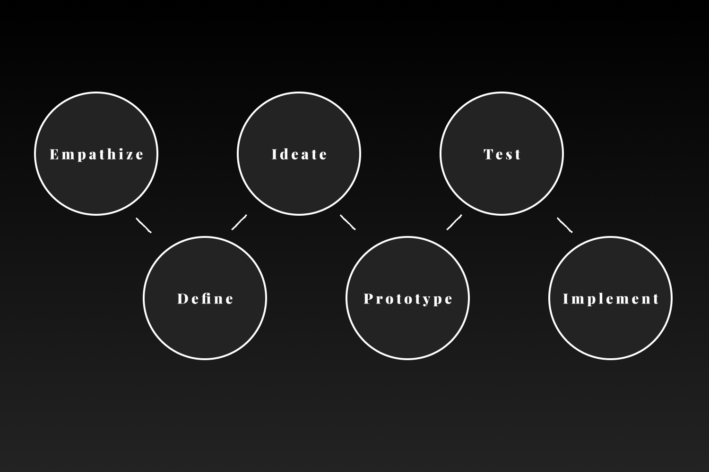
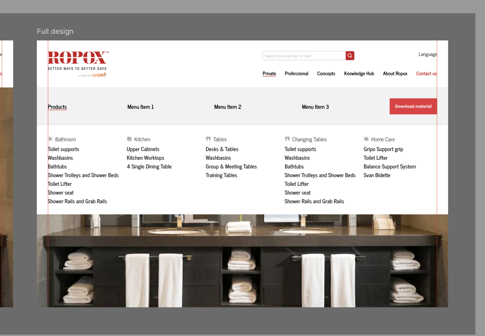
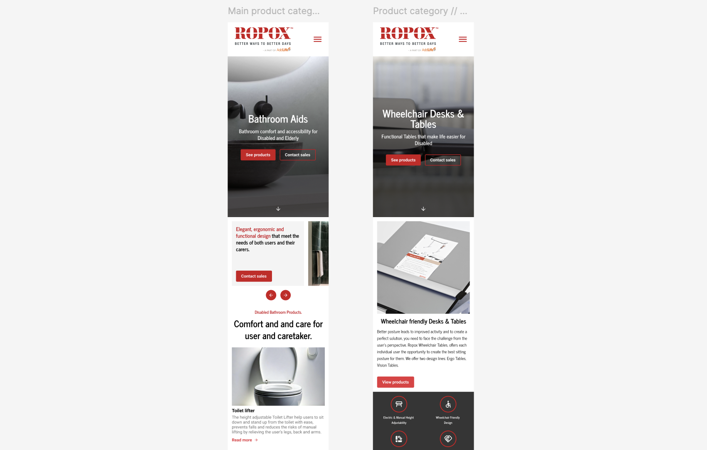
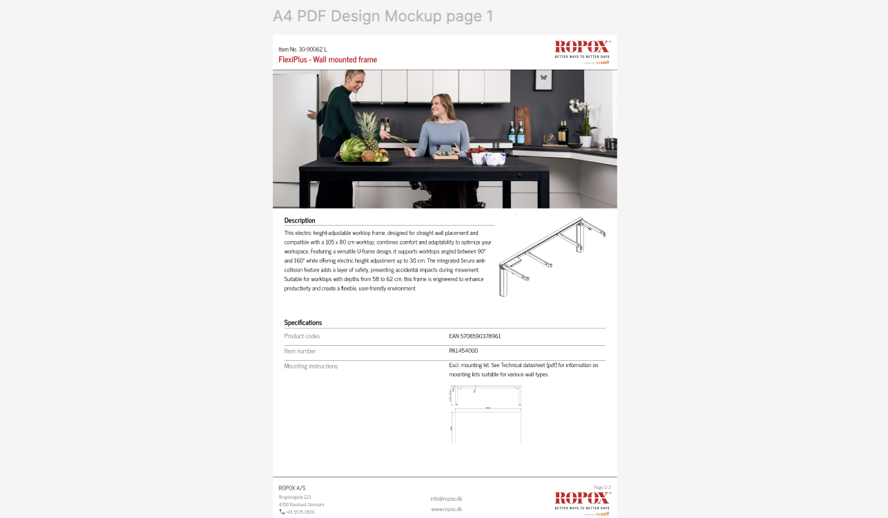

Ropox
Client project - Internship Twentyfour
Purpose
The purpose of the new Ropox website is to create a simplified and modern design that enhances user-friendliness while presenting a clean, attractive, and inviting look that reflects the quality of their products and solutions.
Development Process
The development process followed a simpler version of the Design Thinking process, which structures the design work into six interconnected phases.
-
In the Empathize phase, a user-focused approach was applied to understand the target group's experiences, challenges, and needs. This involved observations, interviews, and other forms of user research.
-
In the Define phase, the gathered insights were analyzed to clearly frame the core problem, ensuring the team addressed the real user needs.
-
In the Ideate phase, a wide range of creative ideas were developed to solve the defined problem. Brainstorming techniques were used to explore different directions.
-
In the Prototype phase, selected ideas were translated into low-fidelity prototypes, allowing for early testing and feedback.
-
In the Test phase,the prototypes were evaluated with users, and their feedback was used to refine and improve the solution.
-
Finally, in the Implement phase, the final solution was developed and prepared for real-world use. This included final refinements and integration into the intended platform or service.
The Results

Desktop menu - In the development

Products - In the development

Main product categories - In the development

PDF - In the development